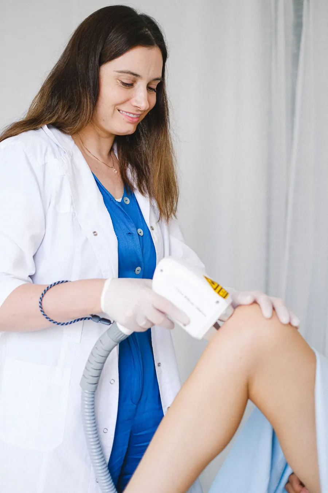
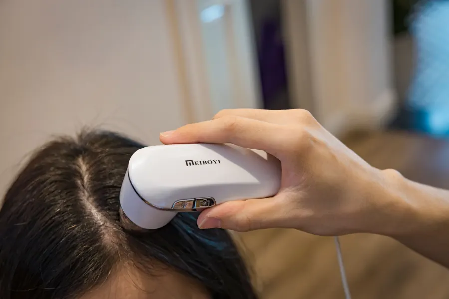
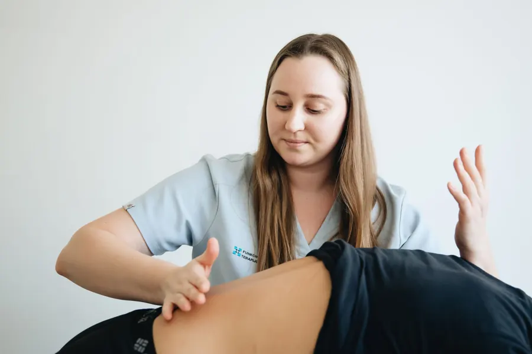
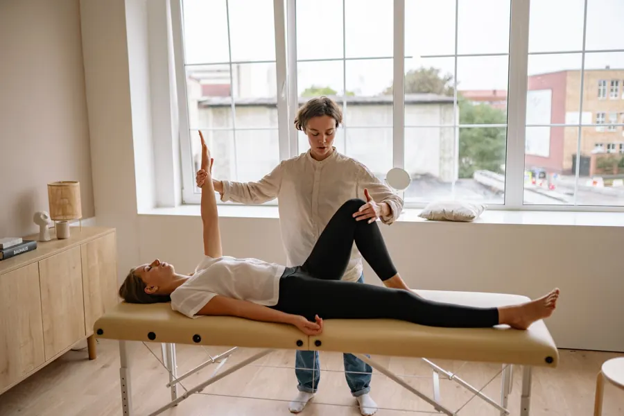
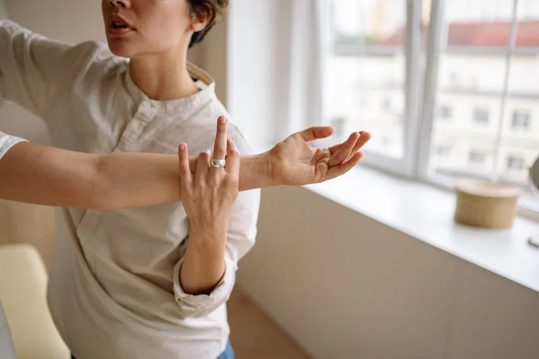

Atendimento individual
O seu histórico, as suas queixas e os seus objetivos orientam cada etapa. Nada de protocolo igual para todo mundo.

 1ª habilitada no Método Gelo X da região
1ª habilitada no Método Gelo X da região
Fisioterapia · Estética avançada · Orlândia (SP)
Fisioterapia, estética avançada e terapia integrativa com avaliação individual, na clínica ou na sua casa. Você não é um número de sessões.
Conheça a Dra. MarinaExperiência
O seu histórico, as suas queixas e os seus objetivos orientam cada etapa. Nada de protocolo igual para todo mundo.
A Dra. Marina é fisioterapeuta e tem formação também em Enfermagem, Farmácia e Estética. Esses conhecimentos se somam no cuidado.
Atendimento na clínica, em Orlândia, e fisioterapia domiciliar para quem precisa receber o cuidado no conforto de casa.
Drenagem linfática
Laser no joelho

Ventosaterapia
Auriculoterapia
Terapia capilar

Método Gelo X
Diástase abdominal
Fisioterapia em casa
Vídeos e fotos ilustrativos de banco de imagens (Pexels, licença livre): não são pacientes da clínica. Não publicamos fotos de antes e depois nem depoimentos. A resposta ao tratamento varia de pessoa para pessoa.
Nossos serviços
A primeira conversa olha o seu histórico, as suas queixas e os seus objetivos. A Dra. Marina avalia e indica o caminho: fisioterapia, estética, terapia integrativa ou a combinação que fizer sentido. Você sai sabendo o plano e recebe o orçamento sem compromisso.
Acompanhamento fisioterapêutico para a musculatura do abdômen, comum no pós-parto.
Fotobiomodulação como recurso complementar no cuidado da dor no joelho.
Treino funcional e facilitação neuromuscular associada ao exercício.
Atendimento fisioterapêutico na sua casa, em Orlândia e região.
Crioterapia estética com o protocolo TikaIce. A Dra. Marina foi a primeira habilitada da região.
Manobras suaves que auxiliam a circulação linfática, quando indicadas.
Fotobiomodulação aplicada ao cuidado do couro cabeludo.
Protocolos corporais montados na avaliação, para contorno e flacidez.
Estímulos em pontos específicos da orelha, como recurso complementar.
Ventosas como recurso terapêutico complementar, com critério e avaliação.



Passo a passo
Conversamos sobre o que você sente, o seu histórico e o que motivou a procura.
A avaliação individual mostra as suas condições e quais cuidados fazem sentido para você.
O plano é definido junto com você e ajustado conforme a evolução, no seu ritmo.
Fotos ilustrativas de banco de imagens: não são pacientes da clínica.

Quem atende
A Clínica LEMAHE tem à frente a Dra. Marina Caetano Guirardeli, fisioterapeuta (CREFITO-3 216312-F), com atuação em Fisioterapia Dermatofuncional e Cardiorrespiratória. Antes da fisioterapia, ela se formou em Enfermagem, Farmácia e Estética.
“Nasci para cuidar” é como ela resume o trabalho: entender cada pessoa, montar o plano junto e acompanhar de perto, na clínica ou em casa.
Ver todas as dúvidas frequentes
Não. A avaliação individual existe para isso: a Dra. Marina ouve você e indica o caminho.
Depende da sua condição, dos objetivos e da resposta ao acompanhamento. O plano é definido na avaliação, sem número de sessões prometido.
Sim. A fisioterapia domiciliar atende Orlândia; para cidades vizinhas, consulte a disponibilidade.
Porque o valor depende do plano, da quantidade de sessões e do local. O orçamento chega pelo WhatsApp, sem compromisso.
O atendimento é particular, salvo combinação prévia. A clínica explica as condições pelo WhatsApp.
A clínica em números
4 áreas
de cuidado num só lugar: fisioterapia, estética avançada, terapia integrativa e atendimento em casa.
10+
tratamentos e protocolos, sempre começando pela avaliação individual.
1ª
profissional habilitada no Método Gelo X (protocolo TikaIce) na região.
Monte o seu pacote
Escolha os cuidados que quer conhecer, a quantidade de sessões e se prefere a clínica ou a sua casa. O orçamento chega pelo WhatsApp, sem compromisso. O plano final é ajustado na avaliação individual.
Acompanhe a rotina da clínica em @dra.marinacguirardeli
Avaliação individual
Vamos conversar sobre o que você precisa e encontrar, juntos, o caminho de cuidado.